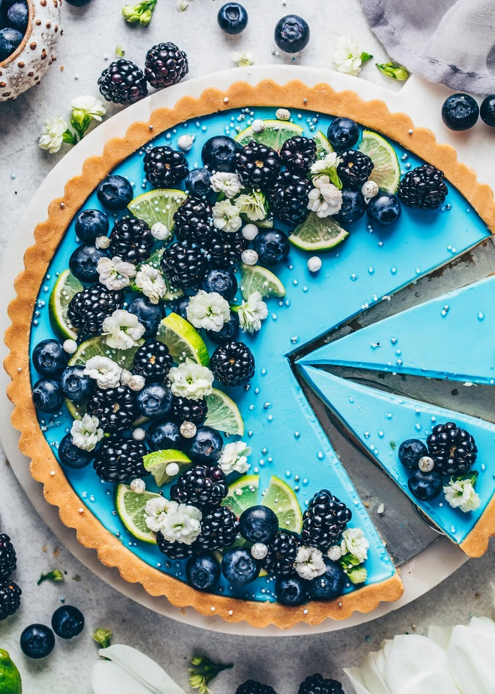
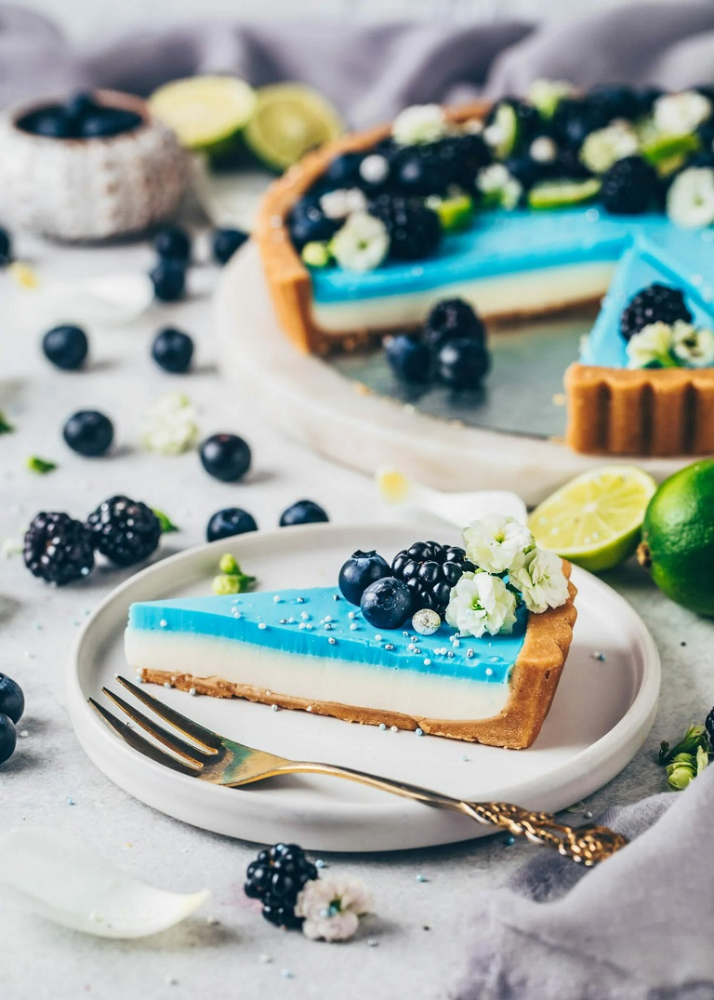

Difficulty: Easy !

How to prepare
- Place the cookies in a food processor and process them into fine crumbs. You can take any (gluten-free) cookies or crunchy granola to make the crust.Alternatively, you can also use sandwich cookies to make an oreo crust. Or make a traditional shortcrust pastry, hazelnut pastry or this gluten-free almond date crust. (Alternatively, put them in a freezer bag and crush them with a rolling pin).
- Transfer the cookie crumbs to a bowl. Add the melted vegan butter and mix to combine. Then press the mixture into a 9-inch tart pan (or another pan with removable bottom). Place it in the freezer for 15 minutes (or in the refrigerator for 30 minutes) so the crust solidifies.
-
Pre-baking: If you want the cookie crust to be crispier, you can
bake it in a preheated oven at 356°F (180°C) for 5-6 minutes. Then
allow to cool completely before adding the filling..
LIME LAYER
- Pour the coconut milk into a saucepan. You can also use another rich non-dairy milk or cream or a creamy drink with flavor. If it is sweetened, I recommend using less syrup/sugar. It's best to taste it. Stir in the agar until it has completely dissolved. Bring to a boil and cook for 1-2 minutes (or according to the package instructions), stirring constantly.
- Turn off the heat and stir in the agave syrup (or sugar) and lime juice. Allow to cool briefly and pour onto the chilled crust. Place it in the refrigerator for about 1 hour until the top has set.
- Pour the water into a small cup and stir in the spirulina powder to dissolve. Set aside.
- Add the coconut milk to a saucepan. Stir in the agar until it has completely dissolved. Bring to a boil and cook for 1-2 minutes (or according to the package instructions), stirring constantly.
- Turn off the heat and stir in the agave syrup (or sugar), vanilla extract, and the spirulina water. Carefully, pour it on the lime layer, then place back in the fridge for another 2 hours, or until firm.
- Once the filling has set completely, carefully remove the tart by gently pressing against the removable bottom of your pan. Garnish with fresh blueberries, blackberries, and limes.
- Enjoy!
COOKIE CRUST
BLUE LAYER
/Cake & Recipe: Bianca Zapatka biancazapatka.com/en/blue-moon-lime-tart/
Ingredients
| Quantity | Item Name |
|---|---|
| 8,8 oz (250 g) | vegan cookies |
| 5,3 oz (150 g) | vegan butter melted (or coconut oil) |
| Lime | layer |
|---|---|
| 1 ¼ cups (300 ml) | coconut milk |
| ¼ cup (60 ml) | agave syrup or other syrup or sugar |
| 2 (80 ml) | limes freshly squeezed or lemon juice |
| ¾ teaspoon | agar |
| Blue | layer |
|---|---|
| 3-4 tablespoon | water |
| 1 tablespoon | spirulina blue superfood powder |
| 1 ⅓ (320 ml) cups | coconut milk |
| ¾ teaspoon | agar |
| ⅙ cup (40 ml) | agave syrup or other syrup or sugar |
| 1 teaspoon | vanilla extract optional |
| To | garnish (optional) |
|---|---|
| ½ cup (75 g) | blueberries |
| ½ cup (75 g) | blackberries |
| limes |